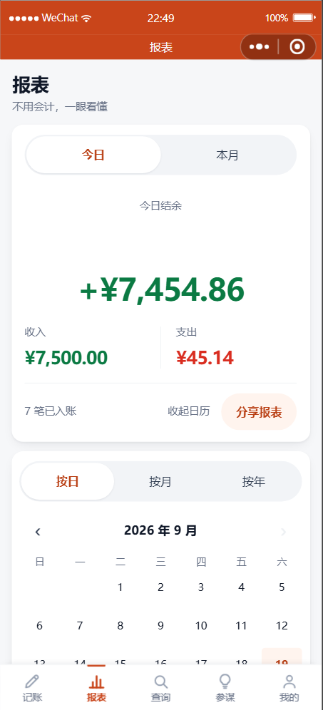
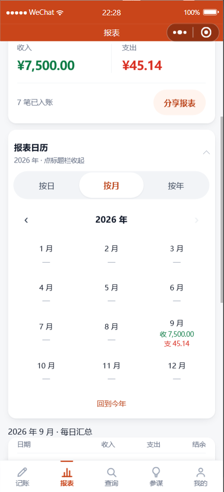
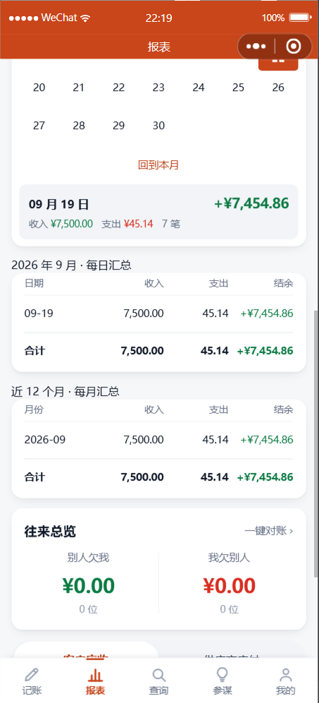

报表页
两个汇总表 + 一行小字进去的日历 · 2026-09-19
一、页面回到简洁的样子
日历不在页面上。整页从上到下就是：结余卡 → 每日汇总表 → 每月汇总表 → 往来。
唯一的入口是结余卡页脚那一行灰字 按日查询 ›，挨着原来的「分享报表」。
你不点，页面上就没有日历，也不会为它发一次请求。点了才在结余卡下面就地展开， 再点「收起日历」就收回去，下次点开还停在你上次看的那一个月。
你不点，页面上就没有日历，也不会为它发一次请求。点了才在结余卡下面就地展开， 再点「收起日历」就收回去，下次点开还停在你上次看的那一个月。
 默认：页面上看不到日历
默认：页面上看不到日历只有「按日查询 ›」这一行小字。
整页结构跟你原来批的方案一致。

点一下：就地展开那行小字变成「收起日历」，
日历出现在结余卡正下方。
二、日历里三种看法
 按日 · 一个月的日历
按日 · 一个月的日历19 号是今天（高亮）。格底
绿条＝有进账、红条＝有支出

按月 · 一年 12 格有账的直接写收支，
没记账的显示「—」

点某天 + 两张汇总表选中区给大字汇总；
下面两张表只有数字、无明细
三、几个刻意的地方
| 做法 | 为什么 |
|---|---|
| 日历格子里不放金额，只放日期 + 一条彩色小条 | 一个月的日历分 7 列，每格只有 96rpx（约 48px 宽）—— 金额塞进去只能写成 10px 上下的小字， 而你根本看不清小字。所以格子里只说"这天有没有进账/支出"，金额放到下面用大字给。 |
| 点一格只给汇总，不列每笔 | 这正是你要的「不需要展示明细」—— 你要的是"这天收了多少支了多少"，不是再翻一遍流水。 |
| 不能翻到未来，翻不动时箭头是灰的 | 未来的账还没发生，翻过去只看到一片空白，然后你会怀疑"是不是数据丢了"。 灰箭头是明明白白告诉你"到头了"，而不是点了没反应。 |
| 三种粒度走同一个接口 | 按日、按月、按年如果各写一套查询，迟早出现"日历上按天加起来"和"表格里按月"对不上。 现在有一道自动检查专门盯这条：三种粒度的合计必须完全相等。 |
| 应收应付不算进收支 | 「别人欠我」是还没到手的钱，算进收入会让结余跟实际现金对不上。这条和日报完全一致。 |
| 只给「结余」一列上色 | 收入、支出的表头已经写着字了，再上色只是花；结余有正负，颜色在这里才真的有用。 |
四、验证
| 项目 | 结果 |
|---|---|
| 默认状态：页面上没有日历，也没有为它发请求 | 通过 |
| 点「按日查询」就地展开 / 点「收起日历」收起 / 再点游标保留 | 通过 |
| 核心不变量：按日 / 按月 / 按年的合计完全一致 | 通过 |
| 日历日期算术（跨年、闰年、网格补齐、往返一致） | 25 / 25 |
| 分组汇总接口（空区间 / 脏日期 / 越权 / 未登录） | 15 / 15 |
| 回归：分享 / 语音归类 / 分类统计 | 33 / 33 · 54 / 54 · 13 / 13 |
| 静态自检 / WXML / 样式 / 控制台 | 16 wxml · 17 wxss 全过 · 无报错 |
这一版我把"简洁"往回收了一刀，顺便把上一版那套「收起状态仍占一张卡片」的样式全删了 ——
留着死样式比没有更糟，后人会以为它还有用。
⚠️ 有一条验证第一次是"假通过"，我把它挑出来了
「应收应付不计入收支」这条，第一次跑的时候报告是绿的 —— 但我去看了一眼，
库里压根没有应收应付的数据，那个分支根本没跑到。
于是补造了两笔（应收 ¥9,999 + 应付 ¥8,888）进库，确认汇总里一分没算进去，才算是真验过。
绿色的测试不等于测到了东西。
五、顺手修的两个东西
- 同一个页面上两个"今日/本月"式的开关用了两套样式（一新一旧）。 已统一，顺手把开关高度从 36px 提到 44px —— 原来低于触控下限，容易点不中。
- 空状态里的按钮也是 38px 高（比如"去记一笔"），同样提到 44px。 那个按钮往往是空状态下唯一的出路，点不中最要命。